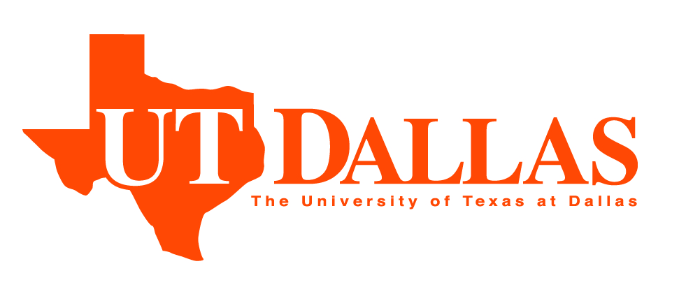
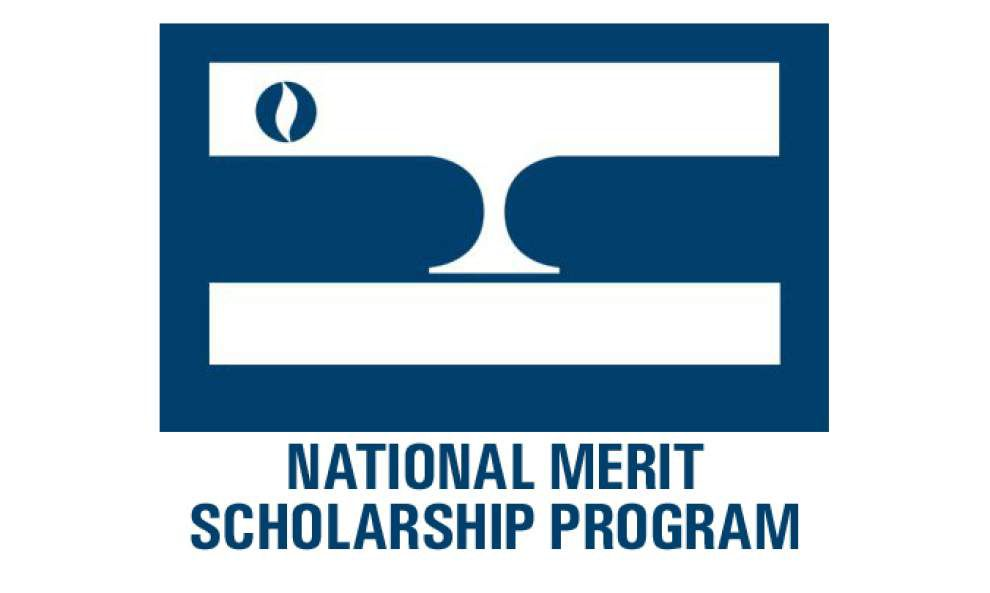

Over the years, I've worked on quite a few projects involving both fundamental and applied work in AI, particularly in neural networks. I've done research trying to develop biologically-motivated neural learning systems while also applying ML/DL in areas including healthcare, conservation, astronomy, and heliophysics.
I've worked with a wide range of learning models, spanning spiking networks, CNNs, transformers, RNNs, GANs, LSMs/ESNs, MLPs, and more. I've also worked with a variety of non-DL machine learning models. I'm proficient in Python and familiar with PyTorch, Tensorflow, Keras, scikit-learn, Numpy, SciPy, Pandas, and many more common Python libraries/tools.
I also have broad experience in both research and computer programming. In the past, I'd done a lot of work with a range of web langauges and frameworks in addition to projects using Java, C, and C++. My experience in machine learning and general research has also given me a good amount of exposure to data science, which has enabled me to make significant contributions even in non-CS domains.

Georgia Institute of Technology
Bachelor of Science (BS) in Computer Science
Aug. 2022 - Present
- CS major at Georgia Tech, currently in my sophomore year.

University of Texas at Dallas
Bachelor of Science (BS) in Computer Science
Aug. 2021 - Aug. 2022
- I spent a year as an undergraduate at UT Dallas, majoring in computer science.
- Was a Computing Scholar, National Merit Scholar, and a member of the Collegium V Honors program.
- GPA: 3.95/4.00
Independent Student Research
Biologically-motivated Neural Learning Systems
June 2021 - Present
- Currently developing new spiking neural net models, building more bioplausible frameworks, attempting to imitate the brain’s networks far more closely than deep learning.
- Models include features such as local error propagation, varied recursive structures for networks of spiking neurons, synapse-based short term memory, and rich time-based operation.
- Designed with an eye for efficiency and scalability, strongly taking advantage of hardware acceleration.
Research @ PPC Group
June 2022 - Aug. 2022
- I played a leading role in performing the data analysis for a clinical trial of an "Immune Support Pack" intended to reduce antibiotic misuse.
- I co-authored a paper, planned for publication in the coming months.
Research Intern @ Carnegie Mellon University
Institute for Software Research
July 2020 - Feb. 2021
- Under Dr. Naveena Yanamala at CMU, I developed new vital sign-based machine learning discrimination models for COVID-19 and influenza - a key requirement for hospitals when the flu season overlaps with the pandemic.
- For this research, I co-authored a paper published to Nature's npj Digital Medicine.
Independent Student Research
Zoolobot & SCAMANDER: Applying Deep Learning in Conservation
June 2018 - July 2020
- Developed a new deep neural network-based meta-learning approach to one-shot learning using hypernetworks to solve a key problem in global conservation efforts by enabling computer vision-based endangered species identification.
- The approach broadly enables learning with only one training sample, and is capable of being applied to a wide range of deep neural network variants.
- The SCAMANDER hypernetwork model was implemented in a web+android application called Zoolobot, with offline capabilities for remote fieldwork.
Teaching Assistant @ Carnegie Mellon University-SSN Summer Program
Institute for Software Research
May 2020 - July 2020
- I was the teaching assistant for an international CMU program for university students supervised by Dr. Raj Reddy (1994 ACM Turing Award recipient).
- It involved lectures on core topics in machine learning and DS, analyses of the most important papers in AI history, student presentations, and final projects.
Independent Student Research
FlareNet: Applying Deep Learning in Heliophysics
June 2018 - July 2020
- Built a new, deep learning-based predictive model for space weather, necessary to protect critical systems, including power grids, satellites, global telecom, and crucial electronics as well as protecting the lives of astronauts.
- These ConvLSTM models make forecasts for solar flares and coronal mass ejections in a manner more computationally efficient than physical simulations or magnetohydrodynamic models.
Intel International Science and Engineering Fair
Grand Award Winner and Finalist
Google Science Fair
Regional Finalist for the Asia-Pacific Region
United States Agency for International Development
Digital for Development Award @ ISEF
Regeneron International Science and Engineering Fair
Finalist

NASA Space Apps Hackathon
Global Finalist

National Merit Scholarship Program
National Merit Scholar
More specifically, your computer is currently simulating the C. elegans connectome in real time, using simple perfect intergrate-and-fire-type neurons. After a random initialization, the worm is frequently given arbitrary chemosensory stimuli (sensing virtual food) at random intervals as well as tactile feedback when it hits the walls of the webpage. Its muscular reactions (in the form of squiggling motions) are mapped through a simple singular velocity computation, producing the smoother travel of the worm on the screen.
The code and connectome are based off of the open-source OpenWorm project (more specifically, the C. elegans robot project).